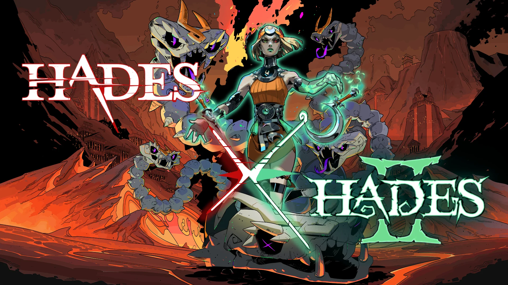

Hades 1&2

What I love
This is the game that made me fall in love with roguelites. There's something so satisfying about the Sisyphean feel they create, and few games do it better than one that literally has Sisyphus as an ally. The unforgettable characters, the relationships you build with them, the beautiful world, the homage to Greek mythology: there's so much to love in this duology. But the two biggest standouts are the combat and the way the run structure drives the story.
The Combat. I could rant about the weapons for days. Every weapon has multiple aspects that change how it plays, so a single weapon can feel like several different ones. On top of that, the boon system means almost every modifier you pick up finds a use regardless of your build. Duo boons, keepsakes, and the Mirror upgrades all push you to experiment instead of settling on one "correct" loadout. It's a masterclass in gameplay mechanics, where depth comes from how the systems combine rather than from piling on more of them.
The Narrative. Making the run itself the way you progress characters and their relationships was truly innovative, and it never feels forced. I've never thought, "Now I have to go talk to this random guy Patroclus so I can get closer with Achilles." I think, "I really hope I run into Patroclus on this run so I can get his item and advance Achilles' story." Death isn't a setback, it's the thing that moves the story forward, so the repetition becomes the reason you keep playing.
Why It Matters to Me as a Developer. Supergiant took the best parts of the first game and did it all over again, and better, with the sequel. It's the benchmark I measure my own design thinking against: the mechanics, the narrative, and the pacing all reinforce each other instead of competing.